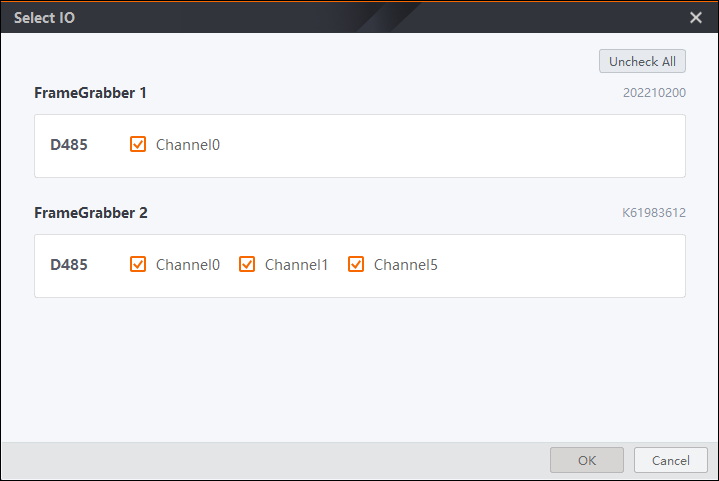
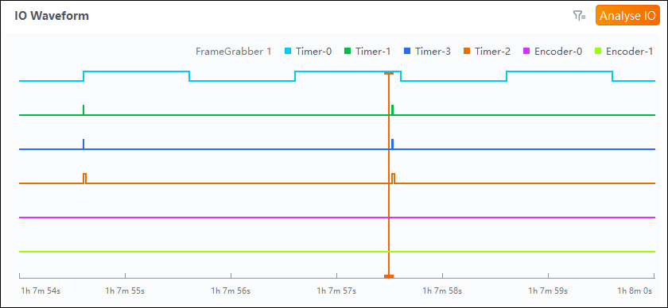
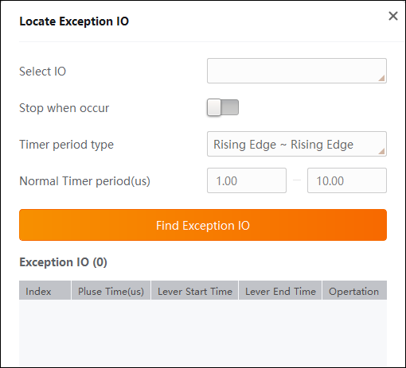

IO WaveForm Detection
After an event in the event chart is parsed, you can view the corresponding IO waveform in the IO waveform chart and the number of pulses can be calculated in the real time.
Select IO
For events selected and parsed in the scope map and event chart, you can
click  in the IO waveform chart to select IO
waveform channels and click OK.
in the IO waveform chart to select IO
waveform channels and click OK.
The IO waveform chart supports displaying maximum 8 channels concurrently.

Figure 1 Select IOThe IO waveform chart provides a clear view of each IO triggering status. Click and hover your mouse cursor over the IO waveform to view the number of pulses and log/event information of the corresponding IO waveform. You can click Exit if pulse number statistics is not needed.
View IO Waveform
Click at any time point in the IO waveform chart, and you can drag the mouse wheel up to zoom in the chart and down to restore. You can also hold the right mouse button and drag the mouse to view the IO waveform at an earlier/later time.

Figure 2 IO Waveform MonitoringLocate Exception IO
Click to locate the exception IO in the IO waveform chart.
On the Locate Exception IO pane, you can specify Select IO, Timer period type and Normal Timer period(us) to locate satisfied exceptions.
After you enable Stop when occur, when an exception occurs, the Tool notifies an IO exception occurs with which channel. Then, the Tool pauses logging device status.
To locate one exception IO in the event chart and IO waveform, click Locate of the corresponding exception in the Operation column.

Figure 3 Locate Exception IO